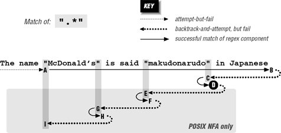
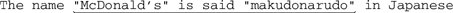
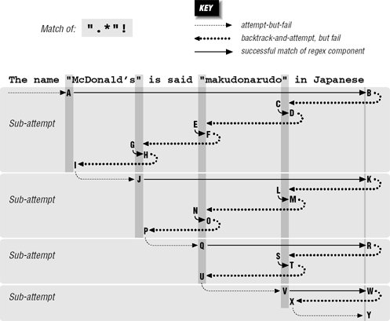
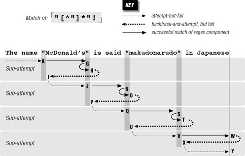
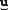

6.3. A Global View of Backtracking
On a local level, backtracking is simply the return to attempt an untried option. That's simple enough to understand, but the global implications of backtracking are not as easily grasped. In this section, we'll take an explicit look at the details of backtracking, both during a match and during a non-match, and we'll try to make some sense out of the patterns we see emerge.
Let's start by looking closely at some examples from the previous chapters. From page 165, if we apply  ".*" ".*" to to
The name "McDonald's" is said "makudonarudo"
in Japanese
we can visualize the matching action as shown in Figure 6-3.

The regex is attempted starting at each string position in turn, but because the initial quote fails immediately, nothing interesting happens until the attempt starting at the location marked A. At this point, the rest of the expression is attempted, but the transmission
(☞ 148) knows that if the attempt turns out to be a dead end, the full regex can still be tried at the next position.
The .* then matches to the end of the string, where the dot is unable to match the nothingness at the end of the string and so the star finally stops. None of the 46 characters matched by .* is required, so while matching them, the engine accumulated 46 more situations to where it can backtrack if it turns out that it matched too much. Now that .* has stopped, the engine backtracks to the last of those saved states, the "try ".* " at ⋯anese" state. " at ⋯anese" state.
This means that we try to match the closing quote at the end of the string. Well, aquote can match nothingness no better than dot, so this fails too. The engine backtracks again, this time trying to match the closing quote at ⋯Japanese, which also fails.
The remembered states accumulated while matching from A to B are tried in reverse (latest first) order as we move from B to C. After trying only about a dozen of them, the state that represents "try ".*" at ⋯arudo"•in•Japa⋯" is reached, point C. This can match, bringing us to D and an overall match: 
If this is a Traditional NFA, the remaining unused states are simply discarded and the successful match is reported.
6.3.1. More Work for a POSIX NFA
For POSIX NFA, the match noted earlier is remembered as "the longest match we've seen so far," but all remaining states must still be explored to see whether they could come up with a longer match. We know this won't happen in this case, but the regex engine must find that out for itself.
So, the states are tried and immediately discarded except for the remaining two situations where there is a quote in the string available to match the final quote. Thus, the sequences D-E-F and F-G-H are similar to B-C-D, except the matches at F and H are discarded as being shorter than a previously found match at D
By I, the only remaining backtrack is the "bump along and retry" one. However, since the attempt starting at A was able to find a match (three in fact), the POSIX NFA engine is finally done and the match at D is reported.
6.3.2. Work Required During a Non-Match
We still need to look at what happens when there is no match. Let's look at ".*" . We know this won't match our example text, but it comes close on a number of occasions throughout the match attempt. As we'll see, that results in much more work. . We know this won't match our example text, but it comes close on a number of occasions throughout the match attempt. As we'll see, that results in much more work.
Figure 6-4 illustrates this work. The A-I sequence looks similar to that in Figure 6-3. One difference is that this time it does not match at point D (because the ending exclamation point can't match). Another difference is that the entire sequence in Figure 6-4 applies to both Traditional and POSIX NFA engines: finding no match, the Traditional NFA must try as many possibilities as the POSIX NFAall of them.

Since there is no match from the overall attempt starting at A and ending at I, the transmission bumps along to retry the match. Attempts eventually starting at points J, Q, and V look promising, but fail similarly to the attempt at A. Finally at Y, there are no more positions for the transmission to try from, so the overall attempt fails. As Figure 6-4 shows, it took a fair amount of work to find this out.
6.3.3. Being More Specific
As a comparison, let's replace the dot with [^"]. As discussed in the previous chapter, this gives less surprising results because it is more specific, and the end result is that with it, the new regex is more efficient to boot. With [^"]*"!, the [^"]* can't get past the closing quote, eliminating much matching and subsequent backtracking.
Figure 6-5 shows the failing attempt (compare to Figure 6-4). As you can see, much less backtracking is needed. If the different results suit your needs, the reduced backtracking is a welcome side effect.

6.3.4. Alternation Can Be Expensive
Alternation can be a leading cause of backtracking. As a simple example, let's use our makudonarudo test string to compare how u|v|w|x|y|z and [uvwxyz] go about matching. A character class is usually a simple test, so [uvwxyz] suffers only the bump-along backtracks (34 of them) until we match at:
The name "McDonald's" is said "makdonarudo" in Japanese
With u|v|w|x|y|z, however, six backtracks are required at each starting position, eventually totaling 204 before we achieve the same match. Obviously, not every alternation is replaceable, and even when it is, it's not necessarily as easily as with this example. In some situations, however, certain techniques that we'll look at later can greatly reduce the amount of alternation-related backtracking required for a match.
Understanding backtracking is perhaps the most important facet of NFA efficiency, but it's still only part of the equation. A regex engine's optimizations can greatly improve efficiency. Later in this chapter, we'll look in detail at what a regex engine needs to do, and how it can optimize its performance.
|  ]
]